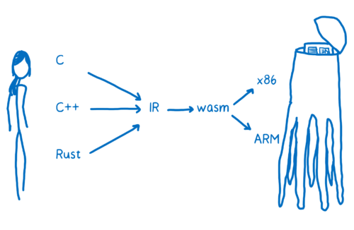

什么是WebAssembly
WebAssembly 是除了 JavaScript 以外，另一种可以在浏览器中执行的语言
- WebAssembly是高级语言在一定程度上的低级抽象，所以WebAssembly是高级语言的一种编译结果，而不是可以直接编写的高级语言。
- 由高级语言编译而来的WebAssembly是二进制字节码文件，浏览器可以将这种字节码转化为本地代码执行。
编译与加载
什么是编译
简单来说编译就是把一种语言翻译成另一种语言，对于编程来说，就是把高级语言翻译成机器码，因为存在许多不同的平台，所以会有多重编译结果，通常，编译器把由前端把高级语言先编译到中间代码，在根据平台的不同由后端编译器将高级语言编译为具体的机器码。

那么，WebAssembly是在其中哪个阶段？

WebAssembly是中间代码到机器码过程的中间产物，中间代码不在直接编译成机器码，而是生成WebAssembly字节码，在通过浏览器编译成机器码。
编译工具
- 目前对WebAssembly支持最好的是llvm的编译链工具，通过前端clang把C编译为中间代码(LLVM-IR)，在由后端编译器编译成wasm(后端编译器目前还在开发中)
- Emscripten。它通过自己的后端先把中间代码（LLVM-IR）转换成自己的中间代码（叫做 asm.js），然后再转化成 WebAssembly。实际上它背后也是使用的 LLVM
编译结果
- wasm文件：最终浏览器加载的文件，是一种字节码文件，可以由asmjs,C,wast文件生成，浏览器加载wasm后可以迅速编译成机器码
- wast文件：wasm对等文本描述文件，有特定的语法（s表达式），可以直接生成wasm文件
加载
- 首先通过fetch api加载wasm文件，加载完成将数据转化为arrayBuffer
- 在支持WebAssembly的浏览器上，通过WebAssembly.compile可以从arrayBuffer生成WebAssembly.Module, WebAssembly.Instance可以将module实例化，在实例化后就可以访问C中定义的变量和函数
WebAssembly 为什么快
- 文件抓取阶段，WebAssembly 比 JavaScript 抓取文件更快。即使 JavaScript 进行了压缩，WebAssembly 文件的体积也比 JavaScript 更小
- 解析阶段，WebAssembly 的解码时间比 JavaScript 的解析时间更短；
- 编译优化，以C为例，在C转化为wasm过程中，llvm已经作了优化。此外，WebAssembly只支持数字类型的变量，因此不需要根据变量类型的不同编以成多个版本